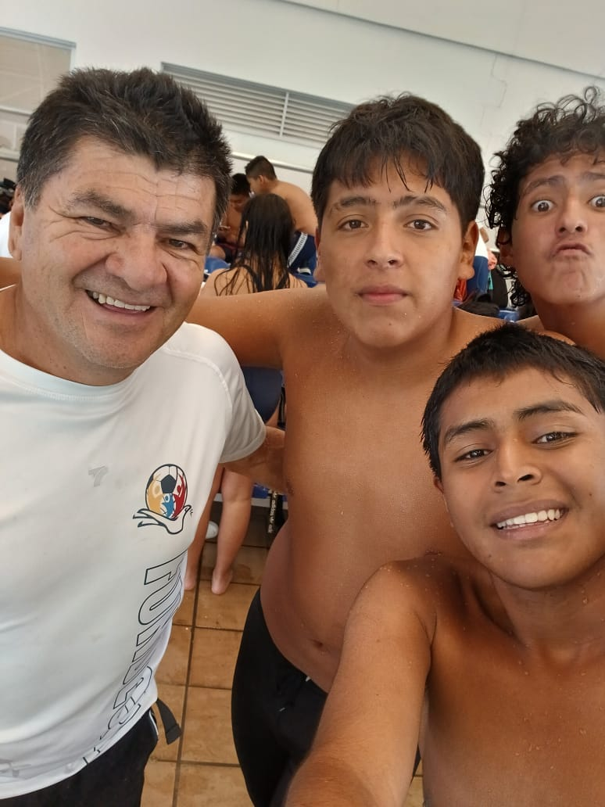
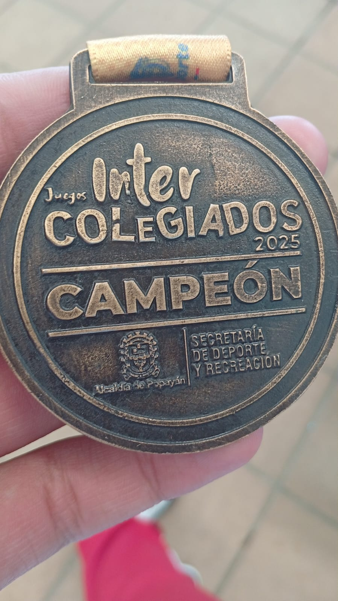
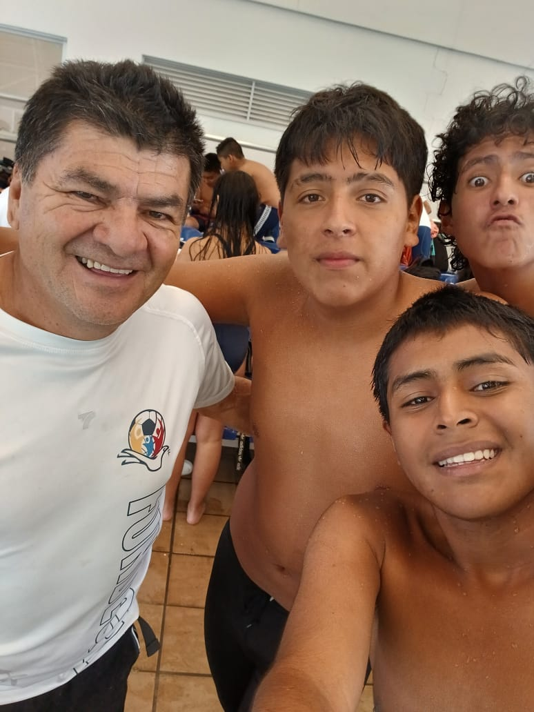
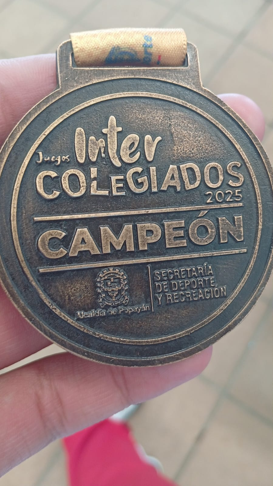

Los Intercolegiados del Colegio Comercial del Norte son una competencia deportiva en la que los distintos salones participarán en una variedad de deportes como fútbol sala, baloncesto, voleibol, atletismo, ciclismo, tenis de mesa y natación. Este evento promueve la sana competencia, el trabajo en equipo y la diversión entre los estudiantes.
Organizar y mantener los Interclases requiere tiempo, dedicación y a veces recursos económicos. Si valoras este esfuerzo y deseas contribuir para seguir mejorando, puedes hacerlo con una pequeña donación 💖. ¡Tu apoyo hará posible que este evento crezca cada año!
Felicitamos a nuestro compañero Andrés Guerrero por obtener el 1er lugar en 100m mariposa. ¡Su esfuerzo y dedicación son un ejemplo para todos nosotros! 🏆🏊♂️
 



El campeonato se evaluará de acuerdo con la disciplina deportiva:

Autor: Joseph Rodríguez Maca
Estudiante grado 11A, Promoción 2025
Presidente del Ministerio de Deportes y encargado de las Interclases
Organizado por el profesor Ariel Pino